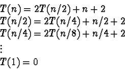
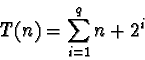
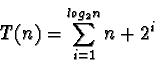
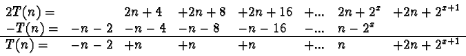

|
In order to calculate the maximum subsequence of a set this algorithm
first calculates three values, max_right, max_left and max_spanning.
Once these values are computed, two comparisons will yield the maximum
subsequence in the set. The cost of computing these three values is
what determines the complexity of this algorithm.
T(n) = 2T(n/2) + C(n) + 3
Because this is a recursive solution, the time to find the maximum
subsequence of one set depends on the amount of time spent finding the
maximum subsequence in each half. It is for this reason that in the
above recurrence relation T(n) is related to 2T(n/2). However
the addition of the middle term, C(n) greatly complicates this
analysis. C(n), above, represents the cost of calculating the
spanning subsequence of maximum value.
This term C(n) involves processing each of the n items. One
pointer works right from the center until it reaches the right set
limit. At each step we add a value to a running sum and check whether
the new sum has a greater value than the max so far. This process
involves a total of n/2 comparisons. The same process takes place
as another pointer moves left from the center until it reaches the
leftmost limit. So, the C(n) procedure is a linear process. This
means the recurrence relation of the entire algorithm can be written
as:
T(n) = 2T(n/2) + n + 2
By expanding this relation we get:

So we know that T(n) can be written as:
T(n) = n + 2 + 2( n/2 + 2 + 2( n/4 + 2 + 2( ... 1) ...) )
That is:

The term q in the above expression is a bit non-deterministic. If
we restrict n to be 2x in order to simplify this exercise, then
q = log2 n = x.

Writing that out in long format:
T(n) = n + 2 + n + 4 + n + 8 + ... n + 2x-1 + n + 2x
Now we'll invoke cancellation by subtracting T(n) from 2T(n)

(x above is log2 n). This gives us:
T(n) = (n-1) log2 n + 2log2 n + 1
Or...
T(n) = (n-1) log2 n + 2n
The dominant term is
(n-1) log2 n making this an
O(n log2 n) algorithm.
|